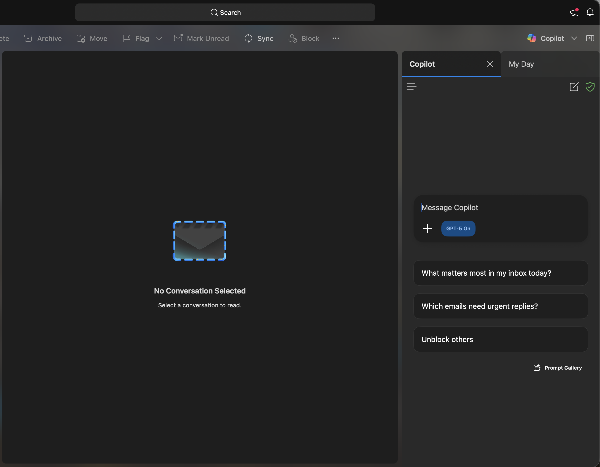

Module 6: Copilot for Outlook
TThis module teaches you how to use Copilot in Outlook to summarize email threads, draft and refine messages, extract action items, and create calendar appointments.
Click below to launch the learning module.